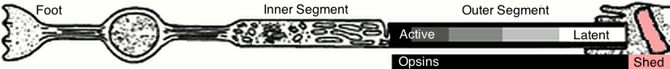

|
rod photoreceptor outer segment square wave dynamic response
|
|
Copyright(c)2016 Jonathan D. Lettvin, All Rights Reserved
|
| |
click to
RESTART
Φ 4.1-6.5
otherwise
photopic
|
|
click for
Photopic
Φ 3.6-6
dwell/λ: 1s/2s
1 ½-used disk
|
|
click for
Scotopic
Φ 0-2.4
dwell/λ: 1s/2s
500 ½-used disks
|
|
click for
Dark Adapted
Φ 0-2.4
dwell/λ: 1s/2s
1000 unused disk
|
|
click to
PAUSE
affects
Model/Graphing
(energy saving)
|
|
|
=== Rod Photoreceptor Anatomy ===
This is a fairly typical sketch of a photoreceptor.
This model ignores everything from the foot to the inner segment.
The outersegment has a stack of opsin-studded disks.
Disks and opsins are generated active by the inner segment to the left.
Opsins that capture a photon become latent (inactive between 10-45 minutes).
Disks and opsins are bitten of and recycled by phagocytosis to the right.
Photons are captured and opsins become more latent along the outer segment.
The outer segment acts as a conveyor belt of active opsins.
The outer segment becomes shorter in brighter light.
|
|
=== Abstract view of opsin disposition ===
The rod interface enables testing of photoreceptor responses to light.
Underneath the image is an abstract view of opsins in the outer segment.
The black/gray/white left end is the working length subject to photons.
The pink right end is missing rod length due to phagocytosis.
Watch lengths and working length color change as Φ and wave change.
|
|
=== About this demonstration ===
When a photon is absorped
an opsin converts from active (11-cis) to latent (all-trans)
and does not recover for between 10 and 45 minutes.
Active opsins will be total opsins minus latent opsins.
---
Phagocytosis reduces rod length by biting off its end.
This reduces the maximum available opsin count
substantially reducing the probability of photon capture
in proportion to, at best the ratio of current length to maximum length.
Used opsins do not absorb photons but remain in the rod.
The actual photon capture probability is:
$$Probability_{capture}=\frac{Opsin_{current} - Opsin_{latent}}{O_{maximum}}$$
Phagocytosis consumes a proportion of active and latent opsins.
Disk generation by the inner segment produces all active opsins.
|
|
=== Legal Ownership ===
This model and application are original works and
the author requests that re-use should be accompanied by attribution.
|
|
=== Set all values as they were at program start ===
|
|
=== Set initial values for bright light ===
Opsin counts and proportions are set for high photon flux.
The square wave intensity is set to between \(10^{3.6}\) and \(10^{6}\).
Activity and the plot exhibit a non-realistic discontinuity when changed.
This models expectations of reduced photon capture in medium bright light.
|
|
=== Set initial values for dim light ===
Opsin counts and proportions are set for low photon flux.
The square wave intensity is set to between \(10^{0}\) and \(10^{2.4}\).
Activity and the plot exhibit a non-realistic discontinuity when changed.
This models expectations of enhanced photon capture in low light.
|
|
=== Set initial values for 5 day dark adaptation ===
Opsin counts and proportions are set for low photon flux.
The square wave intensity is set to between \(10^{0}\) and \(10^{2.4}\).
Activity and the plot exhibit a non-realistic discontinuity when changed.
This models expectations of single-photon capture
after dark adaptation in a cave for 5 days (See Selig Hecht).
|
|
=== Pause/Resume Toggle ===
Clicking on the plot has the same effect.
Both pause/resume the refresh clock;
|
|
!=Dwell/λ Pulse width and period controls:=!^^
|
|
=== Φ Photon count per second controls ===
Photon intensity is created as a square wave with
a lower and higher photon count.
This control uses the log of the intended intensity (Φ).
|
|
=== Dynamic Response Plot ===
Most values are plotted on a logarithmic scale.
The exception is the tanh plot with values between -1 and +1.
Clicking on the plot has the same effect as the pause button.
Both pause/resume the refresh clock;
|
|
=== TODO ===
* correct phagocytosis/regeneration
* correct signal generation
* correct initializing opsins for Φ
* refactor rangesliders
* automate mousify to connect fields with instant help
|
|
=== Instant Help ===
Hovering over a field in this application
Reveals documentation about the field
in this display area.
|
|
=== References ===
* ![rodfacts.html rod facts]!
* ![http://webvision.med.utah.edu/book/part-ii-anatomy-and-physiology-of-the-retina/photoreceptors/ photoreceptors (webvision)]!
* ![http://www.thefullwiki.org/Photoreceptor_cell photoreceptor cell (thefullwiki)]!
* ![http://www.ncbi.nlm.nih.gov/pmc/articles/PMC2839896/ renewal (webvision)]!
* ![https://en.wikipedia.org/wiki/Disc_shedding disk shedding (wikipedia)]!
* ![http://www.d.umn.edu/~jfitzake/Lectures/DMED/Vision/Retina/ReceptorPotential.html photoreceptor membrane potential]!
* ![http://physiologyonline.physiology.org/content/22/4/279 rod-to-rod transmission of single-photon response]!
* ![http://www.hedgefundsblog.com/article/621017657/physiology-of-vision-arrangements-of-rod-cone-cells-features-of-rhodopsin-opsin-cycle-involment-of-photoreceptor-mechanism-of-photoreceptor-activation-in-response-to-neurotransmitters-/ opsin cycle]!
* ![https://www.quora.com/What-are-the-chemical-principles-of-the-photoreceptor chemical principles of photoreceptor]!
* ![http://thebrain.mcgill.ca/flash/capsules/pdf_articles/anatomy_retina.pdf retinal anatomy (mcgill)]!
; http://www.ronos.ro/en/curs-virtual-1.html
; http://biologybizarre.blogspot.com/2013/05/mating-in-swallowtail-butterflies.html
; http://www.oculist.net/downaton502/prof/ebook/duanes/pages/v8/v8c012.html
|